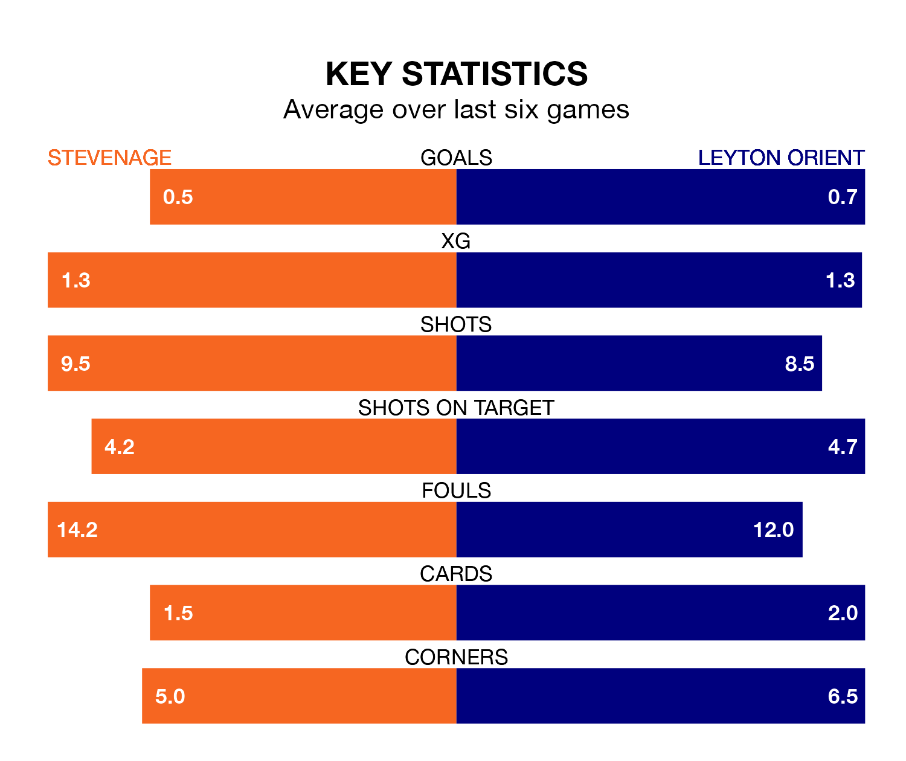

Leyton Orient travel to Stevenage on Saturday in EFL League One.
The visitors come into the game on the back of a draw in their last match, having tied with Port Vale 0-0 at home.
The Boro, meanwhile, lost their last match, 3-1 against Peterborough United, with their goal scored by Nicholas Freeman.
In Jamie Reid, Stevenage have one of the league's most on-form strikers so far this season. He has notched 17 goals in 35 appearances, to sit second in the scoring charts.
His goal rate of one every 167 minutes is quicker than that of Ruel Sotiriou, Orient's top scorer with a goal every 268 minutes, and a total of 10 goals in 37 games.
In the last 10 years, Stevenage and Orient have played each other on 14 occasions. Stevenage won three of them, Orient five, and they drew six times.
On average, the Boro scored 1.1 goals and Orient 1.4 in those matches.
Their last meeting was on September 2, when Stevenage won 3-0 away.
The Boro are sixth in the table after 37 games, of which they have won 17 and drawn 10, earning 61 points.
The away side are five places behind the hosts in 11th, with 15 wins and 10 draws putting them on 55 points.
With 43 goals in 38 games so far this season, Orient are scoring at below the league average rate with 1.1 goals per game. But they are conceding fewer than average too, letting in 44 goals at a rate of 1.2 per game.
Stevenage, meanwhile, are average scorers, with 1.3 goals per game. They have conceded 1.0 goal per game.
Stevenage are in mixed form in EFL League One, with two wins and two draws from their last six games.
With two wins and a draw over that period, Orient's form is slightly worse – they have taken seven points from 18, compared to the Boro's eight.
Saturday's match will be refereed by Craig Hicks, who has taken charge of 10 EFL League One games so far this season, issuing three red cards and booking 30 players. He has awarded two penalties.
The last Stevenage game Hicks refereed was a 2-0 home win against Shrewsbury Town on August 12. He is yet to oversee a match featuring Orient this season.
Updated: 15:10 (UTC), 15/03/24